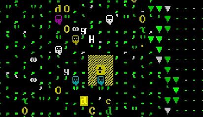
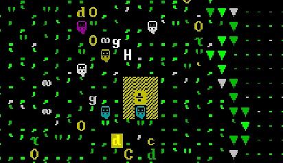
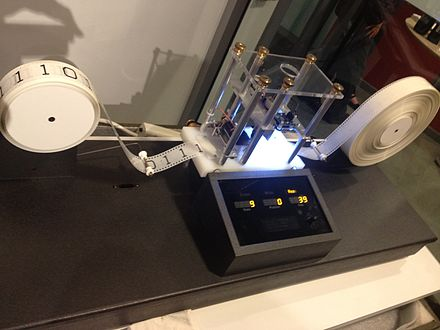
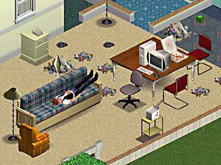

(이미지 출처: Wikipedia: https://en.wikipedia.org/wiki/Dwarf_Fortress)
간혹가다 '튜링 컴플리트'(Turing Complete)하다고 일컬어지는 게임들이 있다. 예컨대 마인크래프트(Minecraft), 팩토리오(Factorio), 드워프 포트리스(Dwarf Fortress), 비시즈(Besiege), 요절복통 기계(The Incredible Machine, 인크레더블 머신) 등이 튜링 컴플리트의 범주에 속한다. 스타크래프트 또한 유즈맵의 제작과 편집을 게임의 일부로 가정한다면 튜링 컴플리트에 포함시킬 수 있다.
그렇다면 여기서 말하는 '튜링 컴플리트'란 무엇일까?
튜링 컴플리트는 전산학적으로 따졌을 때, 수학적으로 증명할 수 있는 모든 종류의 연산을 수행할 수 있음을 의미한다. 쉽게 말하자면 컴퓨터가 할 수 있는 모든 연산작업을 그대로 똑같이 할 수 있다는 것이다. 보통은 컴퓨터를 비롯한 연산기기, 프로그래밍 언어, 또는 소프트웨어 개발툴(예: IDE) 등이 아무런 제약 없이 전산학적 프로세스를 수행할 수 있는지를 판가름하는 잣대로 쓰인다.
(이미지 출처: Wikipedia: https://en.wikipedia.org/wiki/Turing_machine)
게임에서의 튜링 컴플리트도 그 의미가 같다. 예전에 유튜브에 어떤 사람이 "마인크래프트로 만든 컴퓨터" 라며 동영상을 올린 적이 있었다. 그 영상을 보면 알 수 있듯이, 이 사람은 마인크래프트 게임 속에 등장하는 블록들만을 이용하여(예: 레드스톤, 레버, 토치 등등...) 온갖 연산 모듈, 메모리 모듈을 만든 다음 이들을 서로 연결하여 실제로 작동하는 가상의 컴퓨터를 마인크래프트 맵 속에 구현하는 데에 성공했다. 이는 연산량만 충분하면 마인크래프트 속에서 가상의 컴퓨터로 마인크래프트를 플레이하는 것도 가능하다는 의미하며, 이는 즉 마인크래프트가 '튜링 컴플리트'한 게임임을 의미한다.
튜링 컴플리트는 게임이 극한의 커스터마이징이 가능한지 안 가능한지를 구분해 준다는 점에서 중요성을 띈다. 튜링 컴플리트의 기준을 통과한 게임은 과연 이게 그냥 게임일 뿐인지, 아니면 뭐든지 할 수 있는 광범위한 시뮬레이션 프로그램인지 분간이 안 갈 정도의 높은 자유도를 보장하며, 따라서 유명세만 얻으면 수많은 사람들이 오랫동안 계속해서 다양한 실험을 해볼 수 있는 일종의 샌드박스 게임이라고 할 수 있다.
물론 어디까지를 게임 메카닉의 범위로 삼냐에 따라 튜링 컴플리트인지 아닌지의 유무가 달라지는 애매한 게임들도 있다.
(이미지 출처: Wikipedia: https://en.wikipedia.org/wiki/The_Sims_(video_game))
앞서 언급했던 스타크래프트도 마찬가지지만, 좀 더 대표적인 예로 심즈(The Sims)를 들 수가 있다. 심즈의 경우 기본적인 플레이 자체는 튜링 컴플리트가 아니다. 심들의 생활루틴이 전우주적인 범위의 연산을 수행할 만큼 다양하지는 않기 때문이다. 그러나 만약에 전산학적 매커니즘을 가진 아이템들을 만들어서 심즈 안에 설치한다면 이야기는 달라진다. 예를 들어서 연산장치를 이루는 기본 부품인 논리게이트(NOR Gate, NAND Gate..), 트랜지스터(MOSFET, BJT..), 다이오드(PN Junction..) 등을 아이템으로 만들어서 게임 속에 여기저기 배치한다면, 그 순간부터 심즈는 단순한 생활시뮬레이션이 아닌 전산시뮬레이션으로 그 잠재력이 확장되게 된다.
이로 알 수 있듯이, 튜링 컴플리트와 그에 따른 무한정한 자유도는 게임 그 자체 뿐만 아니라, 게임을 하는 유저들이 얼마나 게임 속 컨텐츠를 커스터마이징 하냐에 따라서도 결정된다.